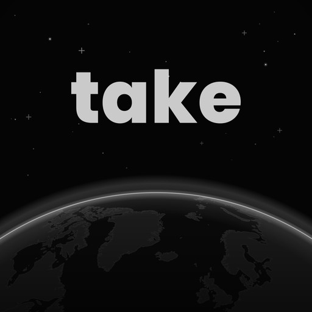
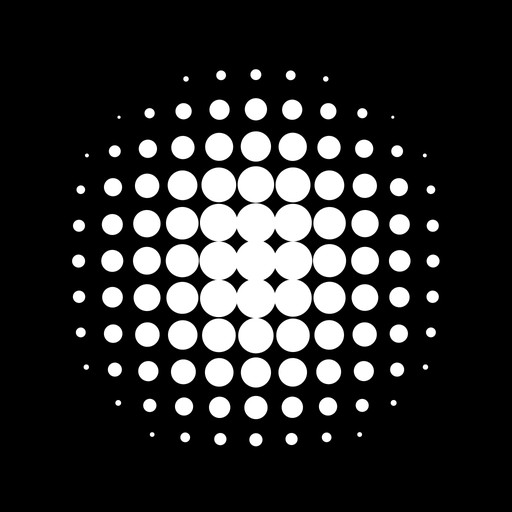

P1Horizon
Le tout premier logo, redessiné : le mot au-dessus, le bord de la planète qui s'allume. On garde ce qui marchait.


La trame de points ressemble à une grille de haut-parleur. La planète a disparu.
Take pose une question au monde entier, et le monde répond : oui, non, une note. Le premier logo le disait avec la Terre vue de l'espace. Ces 16 pistes repartent de là, avec la vraie Terre de l'app (les continents du globe du jeu, son graphite, son bord éclairé), puis lui font dire ce qu'elle fait : écouter, hésiter, choisir.
On repart du tout premier logo : la vraie Terre de l'app, dans l'espace, et ce qu'elle raconte. Chaque icône est montrée en grand, puis à 64, 40 et 22 px.
Le tout premier logo, redessiné : le mot au-dessus, le bord de la planète qui s'allume. On garde ce qui marchait.
Le jour se lève sur la planète, en vert : le oui, l'élan. Même composition, une couleur de plus.
Notre Terre, celle de l'app (les continents du globe du jeu), éclairée par le haut. L'icône la plus directe.
Côté nuit, les villes s'allument en vert et en rouge : à toute heure, quelque part, quelqu'un donne son avis.
La Terre entre deux soleils : vert d'un côté, rouge de l'autre. Le monde entre deux avis.
Un point d'interrogation dont le point est la Terre : Take pose une question à la planète.
Le mot du premier logo, où le a devient la planète. Marche en icône comme en logotype.
Le globe a une queue de bulle : c'est le monde qui prend la parole.
La Terre prend parti : couper, entourer, éclairer, et une version à plat pour les petites tailles.
Une bulle de parole ouverte sur la Terre, posée sur le vert du oui.
Un faisceau vert part d'un point de la planète : un avis publié d'ici, vu de partout.
La Terre presque noire, seul son bord brille. Le plus sobre, le plus premium ; lisible en tout petit.
Une question coupe le monde en deux ; les tranches sont vertes et rouges.
Un anneau fait le tour de la Terre : vert derrière, rouge devant. Les avis circulent autour du monde.
La même Terre en deux tons, sans lumière : pour 20 px, le monochrome Android, les notifications.
Le premier logo, mais l'horizon s'allume vert à gauche et rouge à droite : la planète hésite.
La Terre sur fond clair, pour voir l'icône sans le noir spatial.